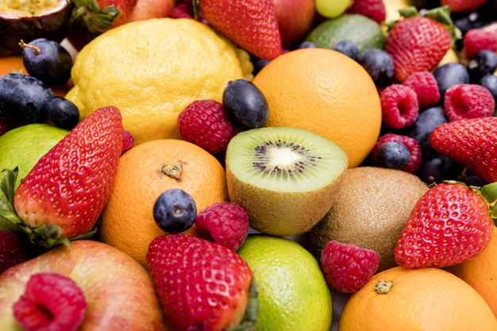

Los frutos
¿Qué son los frutos?

Se denomina fruta a aquellos frutos comestibles obtenidos de plantas cultivadas o silvestres que, por su sabor generalmente dulce-acidulado, su aroma intenso y agradable y sus propiedades nutritivas
Elaboración de frutos secos